Creating Sections¶
Creating Sections – that is, the actual groupings of students and teachers meeting as classes during the Year – is where all the pieces we have constructed thus far come together: Years, Terms, Courses, Timetables and People.
In primary and secondary schools, “sections” are often referred to as “classes.” We try to avoid using the term “class” because it has many different meanings – both in schools and in computer programming. In Moodle and other learning management systems, our “sections” are referred to as “courses.”
The total number of Sections in a given school quickly multiplies. In a school with 20 teachers teaching four classes, there will be 80 Sections. In most cases, you will eventually want to use Importing and Exporting from Spreadsheet to create Sections automatically. Going through the “manual” process of creating Sections using the web interface will help you understand how Sections work, however.
Making a New Section Via the Web Interface¶
To create a new Section, you must be logged in as a member of Clerks. Navigate to the School tab, and click on Sections:
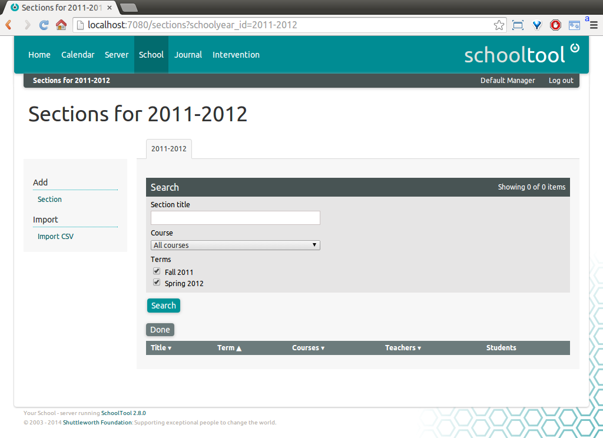
Click Add: Section. Select a Course the Section should be associated with, as well as a starting and ending Term. Note that this Section spans two Terms. The “Title” and “Description” form fields are optional. If locations have been created via Resources (documentation of this needed), they can be selected here.
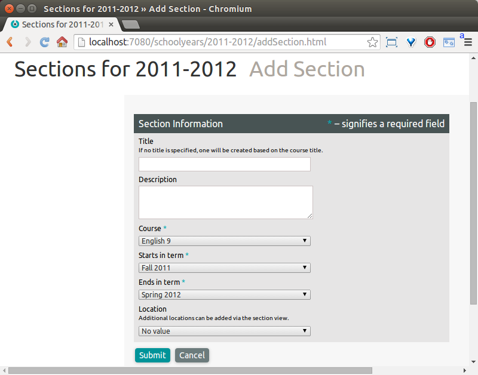
Click Submit:
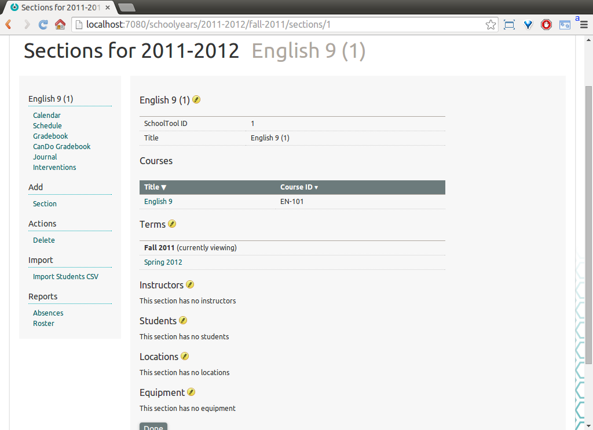
Adding and Editing Instructors and Pupils¶
To add an instructor or instructors for the Section, click on the yellow pencil icon next to Instructors. The subsequent form works like the add form for Groups. Check the box next to the Person you created in Creating a User Account, and click Add:
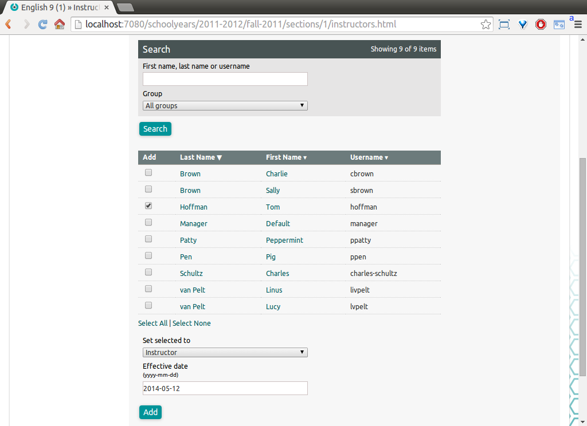
Note that instructors gain elevated privileges in a section (for example, to create and score activities or take attendance) whether or not they are members of the “Teacher” Group.
Click on the yellow pencil icon next to Students to add pupils to the Section. Note that the list of People you may add is not limited to members of the “Student” Group. Any People in the system can be students in a Section.
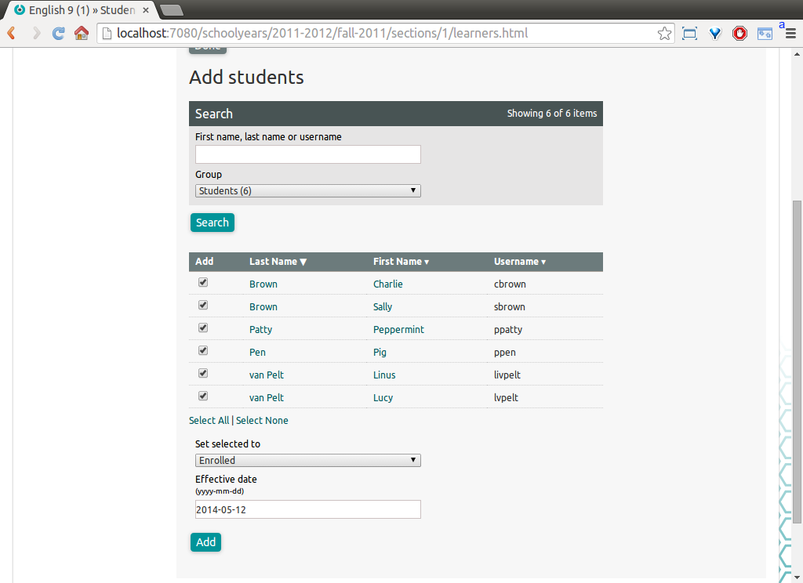
The populated Section looks like this:
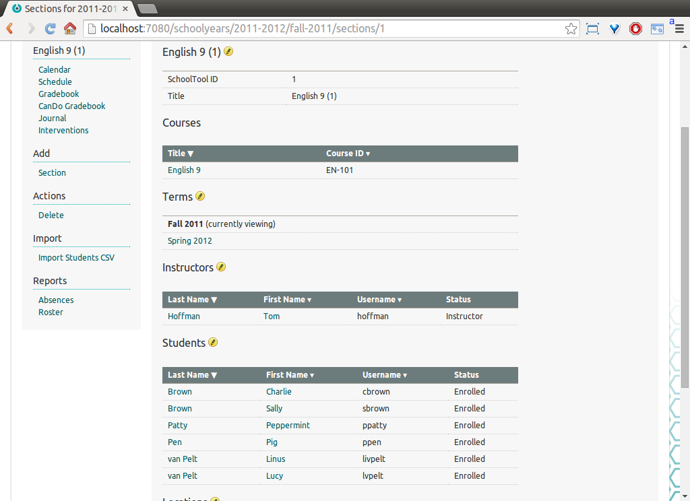
If the students are all part of a single group, you can use the Group menu under search to filter out only the group’s members and then the Select All link to check all the boxes with one click.
Note that the application actually stores Sections spanning multiple Terms as a sequence of linked single-term sections. If you click on the edit pencil next to Terms you will see:
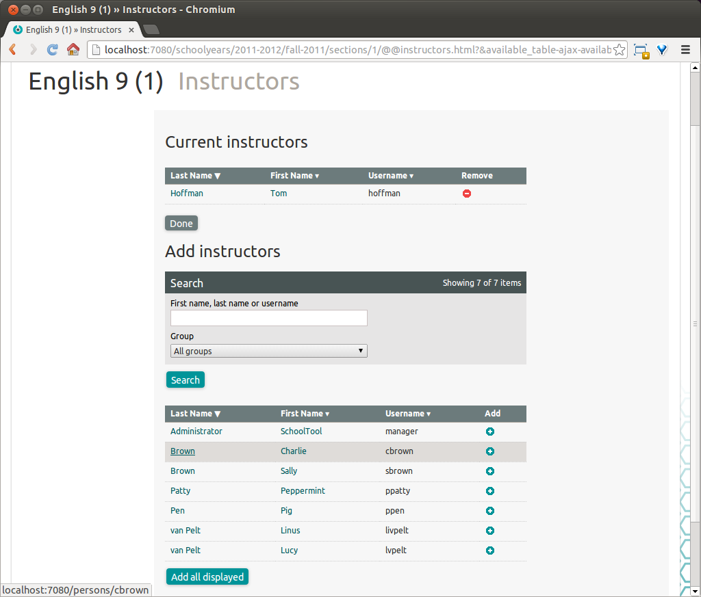
Each Term has its own enrollment data. Students that are added or removed from a Section are added or removed from all linked Sections in later terms. That is, if a student is dropped from the fall semester of this Section, they are also dropped from the spring semester Section. If a student is added in the spring semester, they are not also added in the fall. You can disassociate the Sections by clicking Unlink.
Scheduling the Section into a Timetable¶
If you have set up Timetables, you can now assign the section’s meeting times. If you did not create a Timetable, you can still use the Section gradebook and some other SchoolTool functionality, just not anything that is dependent on knowing when the Section meets, like the attendance journal or calendar.
From the main Section view, click Add Schedule: School Timetable in the left sidebar:
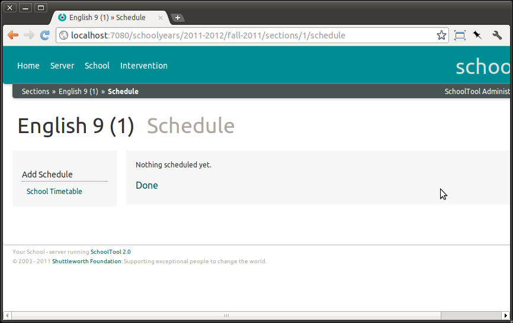
Select the relevant Timetable from the menu (we only have one at this point) and the starting and end dates for this particular schedule. By default this will span the entire Term, but you can assign it to a shorter span if you want to, for example, have the class meet Tuesdays and Thursdays for the first half of the Term and Mondays and Wednesdays for the second half.
Click Add:
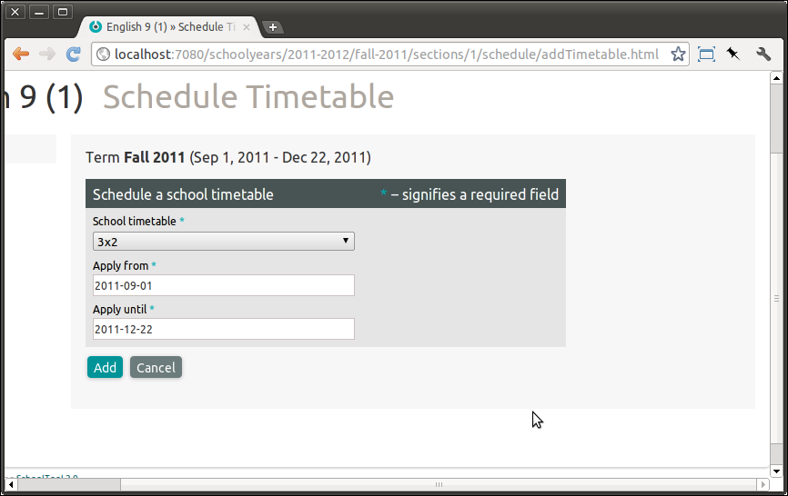
This Section meets Monday through Thursday at 10:00. So we check the appropriate boxes:
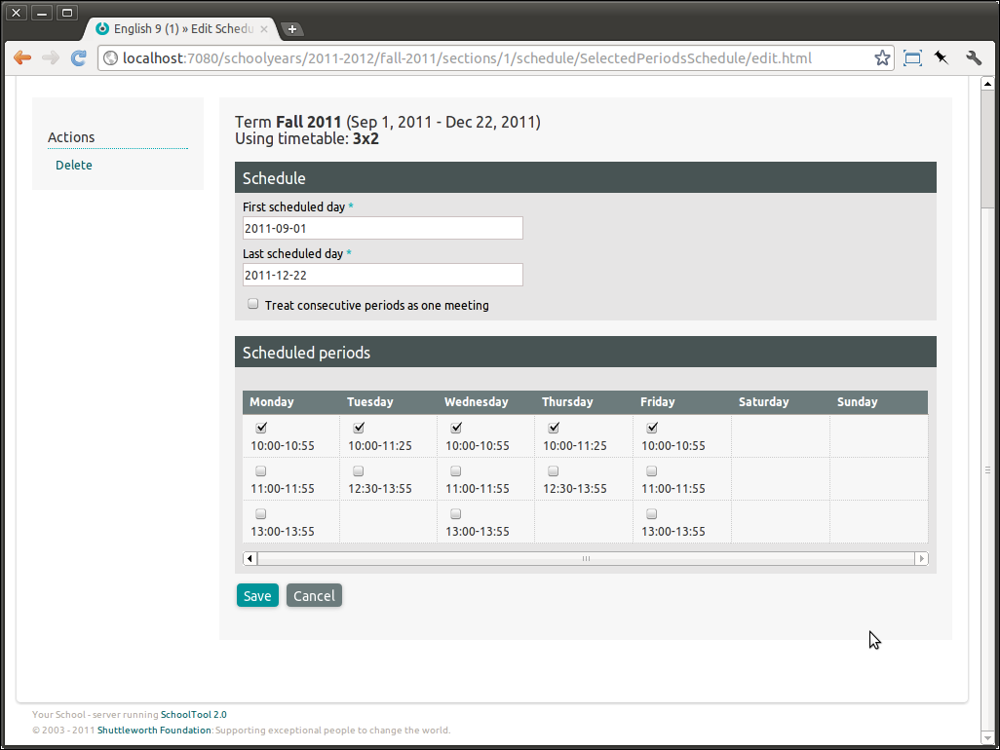
If in the Timetable there are consecutive periods which you would like to be treated as a single long period, check the Treat consecutive periods as a single meeting box. The most obvious reason you would want to do this is to count attendance only once at the beginning of a double period.
Hit Save:
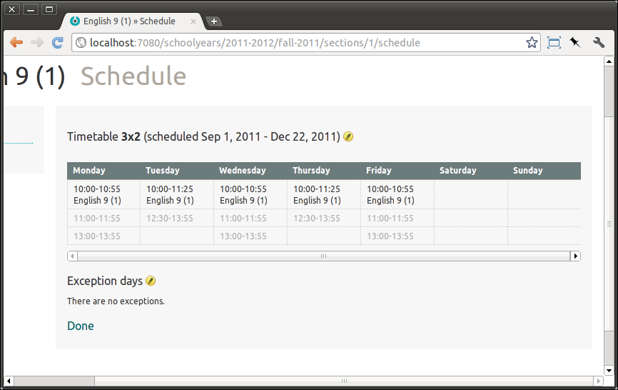